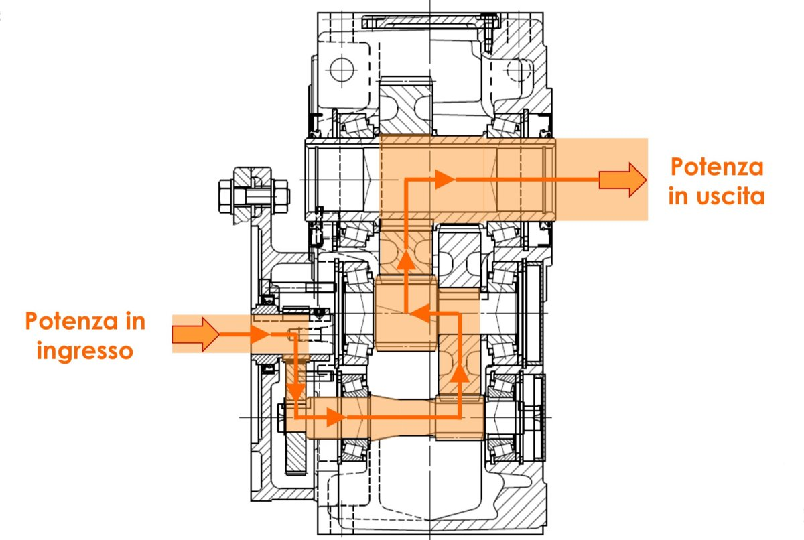
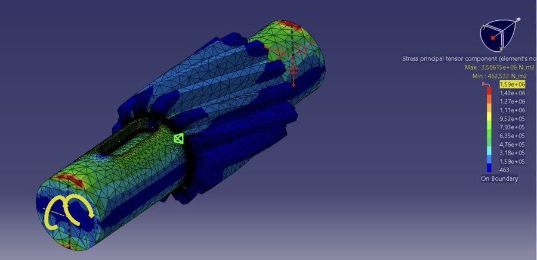

Industrial Gearmotor Redesign

Group course project (Mechanical Design / Construction of Machines, Politecnico di Milano, June 2024) focused on the redesign of the central reduction stage of a three-stage industrial gearmotor, to allow it to transmit a substantially higher power — from 1 kW to 2.4 kW — while keeping the overall reduction ratio (41.7) and the gearmotor's external envelope unchanged. Working with four teammates, I contributed to the sizing and verification of the central shaft and its mounted components.
Design & Verification

Starting from the load cycle and the power/torque flow through the three reduction stages, the internal actions on the central shaft were derived and used to size and verify the shaft, the gears and the connecting key. The shaft (16MnCr5) was checked for static strength, fatigue, deflection and flexural/torsional critical speed; the gears (16NiCr4) were verified against pitting and bending fatigue; the bearings were checked for fatigue life, and the key (C45) for contact pressure. The final design was cross-checked with a finite element analysis of the shaft-gear assembly and documented in a full set of construction drawings.
- Load & Power Flow Analysis: Derivation of speeds, torques and bearing reactions across the 3-stage, 41.7:1 reduction.
- Shaft Design: Static, fatigue, deflection and critical-speed (flexural & torsional) verification of the central shaft in 16MnCr5.
- Gear & Bearing Verification: Pitting and bending fatigue checks on 16NiCr4 gears, fatigue life verification of the supporting bearings.
- FEM Validation & Drawings: Finite element cross-check of the redesigned stage and a complete set of construction drawings.
Tools and Technologies
- Mechanical Design: Shaft/gear/bearing/key sizing per standard mechanical design methods (fatigue, pitting, critical speed)
- Simulation: Finite Element Analysis of the shaft-gear assembly
- Documentation: Construction & tolerancing drawings